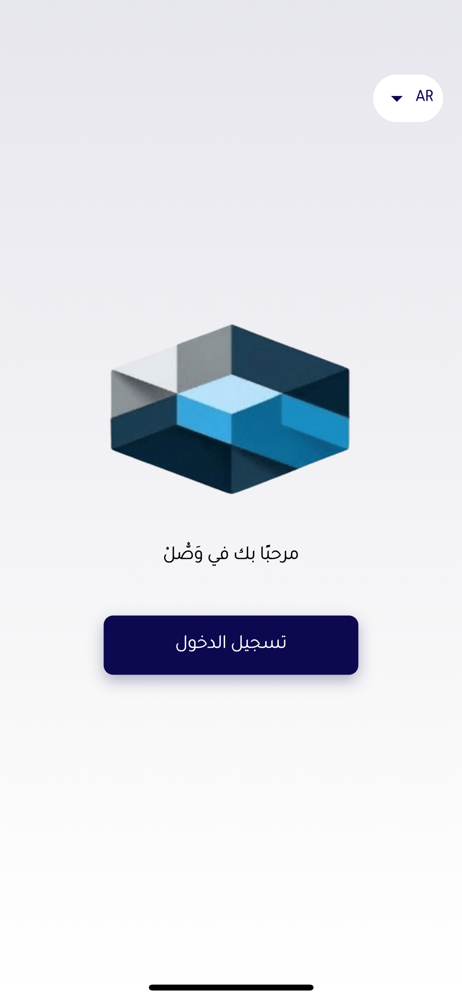
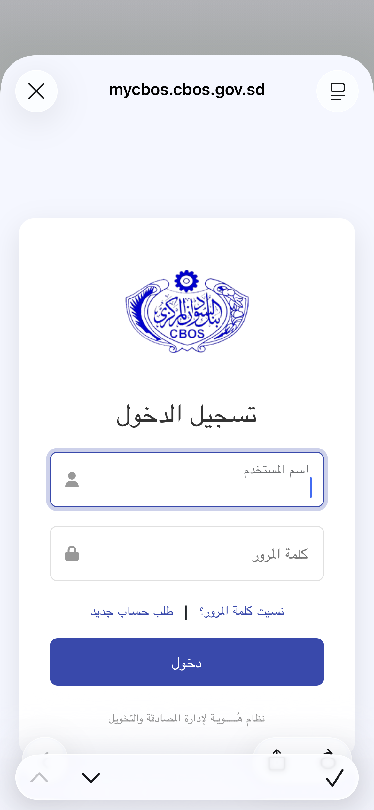
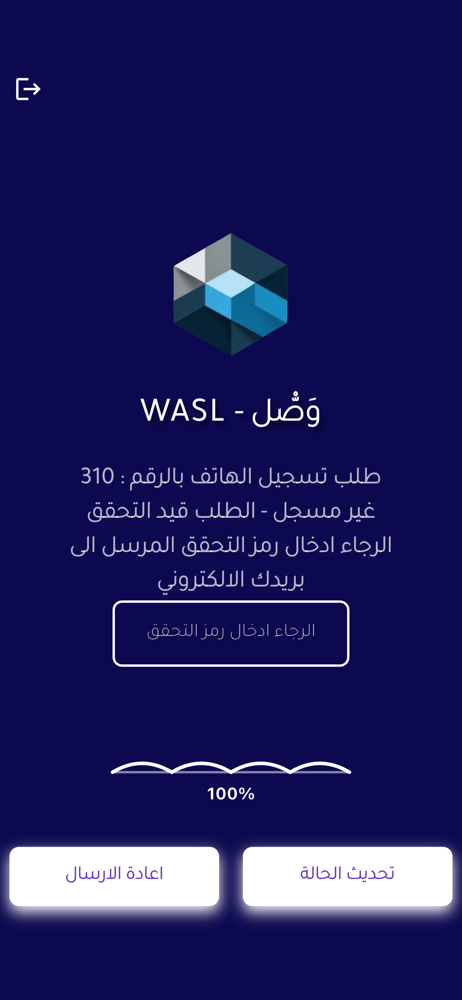
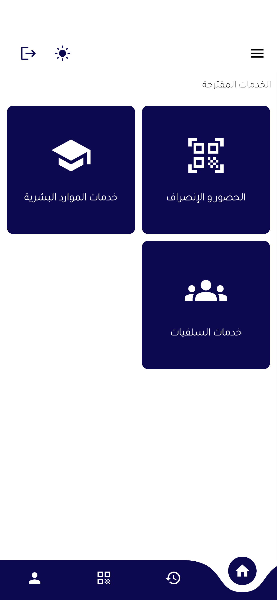
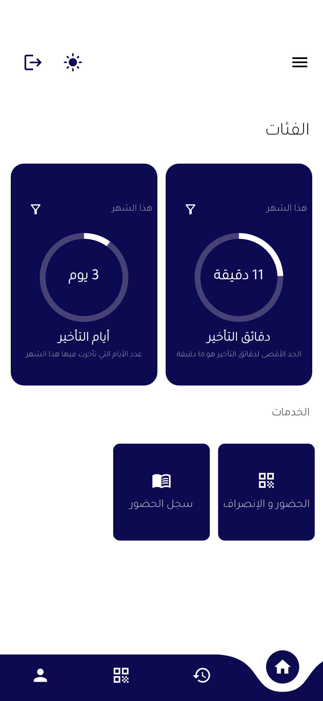
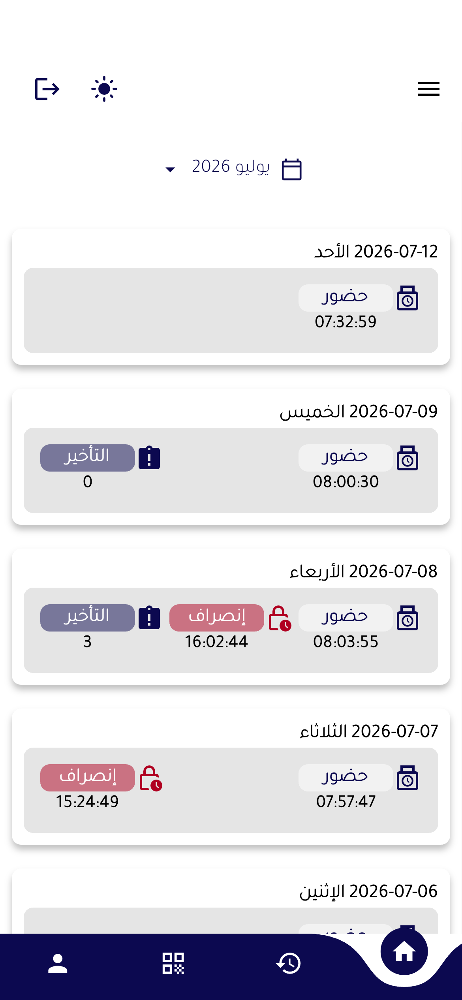
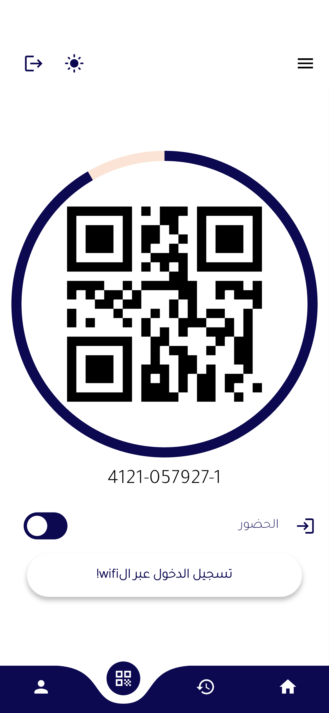
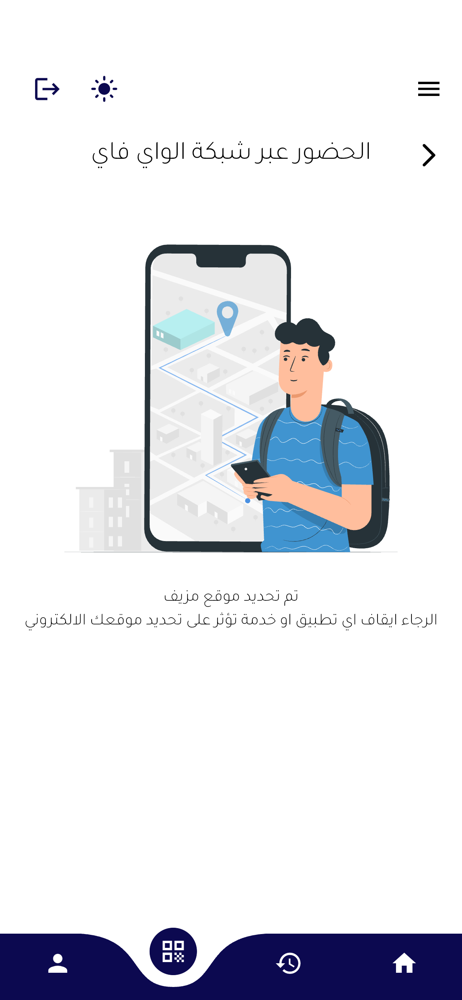

فهرس الدليل
📌 مقدمة
تطبيق وصل ينقسم إلى جزئين رئيسيين: الحضور والانصراف، وخدمات البنك (الرسوم الدراسية، السلفيات بأنواعها، وسيتم إضافة باقي الخدمات تباعاً). هذا الدليل يشرح جميع الشاشات والوظائف.
١. شاشة الترحيب صورة 1.png
هذه هي الشاشة التي تظهر للمستخدم عندما يقوم بفتح التطبيق. وعند الضغط على تسجيل الدخول ستظهر له الشاشة التالية حيث سيقوم بإدخال بيانات الدخول الخاصة به.


٢. تسجيل الهاتف مع المستخدم صورة 3.png
يقوم تطبيق وصل بتسجيل بيانات الهاتف مع بيانات المستخدم، وذلك للحفاظ على خصوصية المستخدمين وعدم تمكين أي شخص من تسجيل الدخول إلى حساب المستخدم من جهاز آخر. وتبدأ العملية بتأكيد هوية المستخدم من خلال إدخال الكود الذي يتم استقباله عبر البريد الإلكتروني الخاص بالمستخدم.

٣. الشاشة الرئيسية صورة 4.png
في الصفحة الرئيسية يمكن للمستخدم أن ينتقل بين الخدمات المختلفة أو الحضور والانصراف. فكما أسلفنا، فإن التطبيق يخدم غرضين حالياً: الحضور والانصراف وعدد من الخدمات.

٤. الحضور والانصراف 5.png , 6.png
الحضور والانصراف حالياً يقوم بعدد من العمليات، منها تحديد أيام التأخير وتحديد دقائق التأخير، إضافة إلى عرض سجل الحضور والانصراف. كما يمكن المستخدم من تسجيل الحضور وتسجيل الانصراف.


وتتم عملية تسجيل الحضور من خلال إحدى طريقتين:
- مسح رمز QR والذي يظهر على التطبيق بواسطة جهاز مسح الـ QR الذي يكون بحوزة رجال الأمن.
- عن طريق الاتصال بالـ WiFi الخاص بالبنك، حيث يقوم التطبيق مباشرة بتسجيل الحضور لك بعد التأكد من تواجدك داخل مباني البنك.



٥. خدمة الرسوم الدراسية 10.png , 11.png , 12.png
عند الضغط على خدمة الرسوم الدراسية سينتقل المستخدم إلى شاشة عرض طلبات المستخدمين / طلباته فقط حسب صلاحياته، وتكون مقسمة إلى مكتملة أو غير مكتملة. عند الضغط على زر + سينتقل المستخدم إلى شاشة تقديم الطلبات، وعند الضغط على زر العين سينتقل إلى شاشة التفاصيل.


٦. تطبيق سير العمل على الطلبات 13.png
من خلال تطبيق وصل يمكن اتباع سير عمل منظم ومطابق لسير العمل المعمول به حالياً، وفقاً لصلاحيات معينة تمنح للمستخدمين وتمكنهم من تنفيذ مهامهم.

٧. السلفيات 14.png , 10–12.png
لا تختلف السلفيات عن خدمة الرسوم الدراسية كثيراً، ففيها نفس التفاصيل، إلا أن الاختلاف هنا يكمن في وجود أنواع مختلفة للسلفيات (سيارات، عقارات، خاصة، استثنائية). وتظهر هذه الأنواع للمستخدمين حسب استحقاقهم للسلفيات؛ فإذا كان الموظف لا يستحق السلفية فلن تظهر له.

عند الضغط على أي سلفية سينتقل المستخدم إلى شاشة عرض طلبات المستخدمين/طلباته فقط حسب صلاحياته، وتكون مقسمة إلى مكتملة أو غير مكتملة. عند الضغط على زر + سينتقل إلى شاشة تقديم الطلبات، وعند الضغط على زر العين سينتقل إلى شاشة التفاصيل.